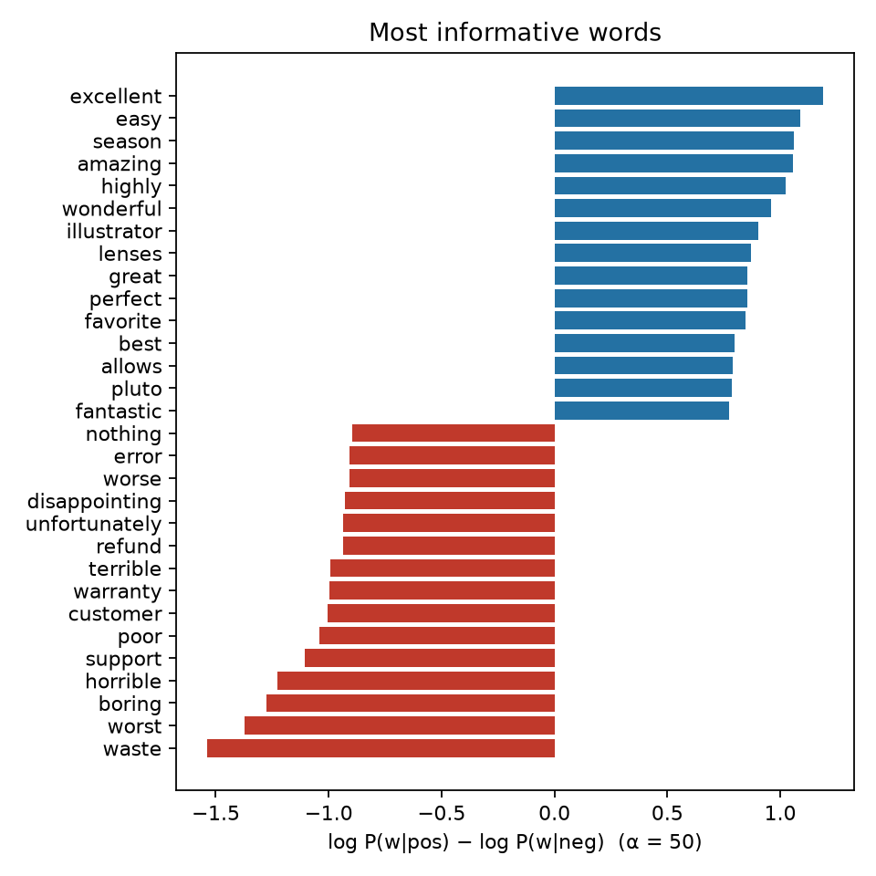
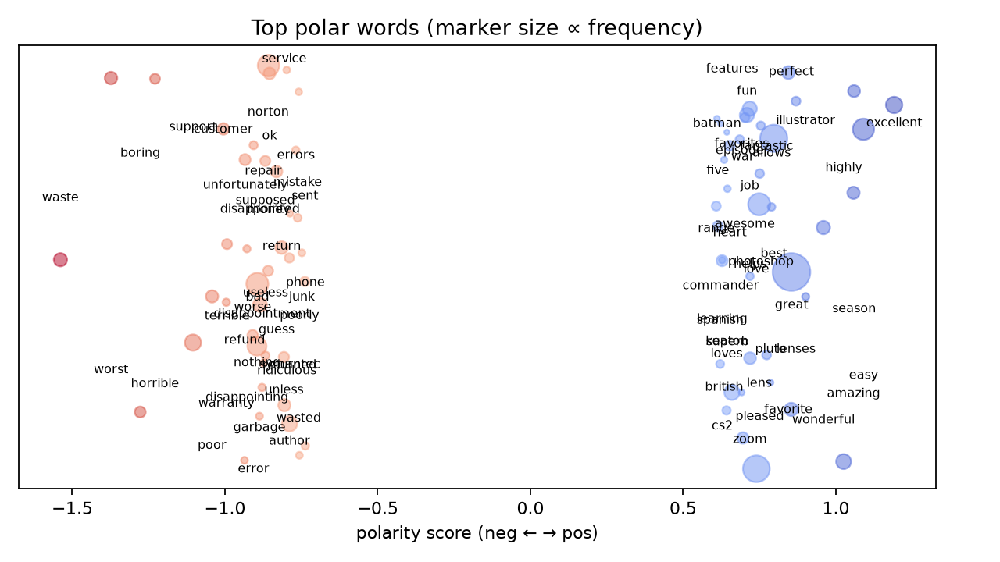

SYDE 572 · Introduction to Pattern Recognition · Assignment 4
Text Classification with Naive Bayes
Abstract—This report implements a Naive Bayes classifier from scratch with add-α smoothing and applies it to the sentiment polarity (positive/negative) of 11,914 customer reviews from six product topics. Trained on the first 80% of the shuffled data, the classifier reaches 81.5% accuracy on the held-out 20%. An error analysis attributes mistakes to negation, mixed-sentiment text, factual text and very long reviews. Optional experiments show a 90.5% topic classifier, a learning curve that flattens near 81%, bigram features that raise accuracy to 85.7%, a linear SVM at 85.2%, and a 16-point accuracy drop when a camera classifier is tested on book reviews.
Index Terms—Naive Bayes, sentiment classification, smoothing, bigrams, learning curve, domain adaptation.
I. Data and Setup
The file all_sentiment_shuffled.txt has one tokenized, lowercased review per line (topic, polarity, document id, words). The topic and id are discarded for the sentiment task. The first 80% (9,531 reviews: 4,847 positive, 4,684 negative) is used for training and the last 20% (2,383 reviews) for evaluation. The training vocabulary has 52,392 word types. The required part uses only the Python standard library; the optional tasks use NumPy, pandas, Matplotlib and scikit-learn (requirements.txt).
II. Method
train_nb stores the class priors P(c) and the per-class word counts. The smoothed likelihood is P(w | c) = (count(w, c) + α) / (Nc + α(V + 1)), where Nc is the total number of word tokens in class c and V the vocabulary size; the extra +1 gives unseen words a nonzero probability, so scoring never fails. score_doc_label returns log P(c) + Σw log P(w | c); log probabilities avoid numeric underflow. classify_nb returns the arg-max label, classify_documents maps it over a list, and accuracy is the fraction of correct predictions. Class labels are not hard-coded, so the same code is reused for the topic task.
III. Sanity Checks
| Document | P(doc, pos) | P(doc, neg) |
|---|---|---|
| [“great”] | 0.001321 | 0.000528 |
| [“bad”] | 0.000172 | 0.000455 |
“great” scores higher as positive and “bad” higher as negative, as expected. The document ['a', 'top-quality', 'performance'] contains unseen words and scores without error (log scores: negative −27.04, positive −26.37).
IV. Results
| α = 0.1 | α = 0.5 | α = 1 | α = 2 |
|---|---|---|---|
| 0.7935 | 0.8091 | 0.8154 | 0.8154 |
Little smoothing hurts because rare words get extreme, unreliable probabilities; accuracy plateaus around α = 1–2.
V. Error Analysis
Examples of confidently wrong predictions (margin = log-score of the predicted label minus log-score of the true label):
- Negation. “this was not a waste of brad's time or mine . good job !” (true positive, predicted negative, margin 3.7). The model sees “waste” and “not” as negative evidence and cannot see that “not” reverses “waste”.
- Criticism inside a positive review. “excellent service , and the product worked extremely well . the only criticism i would have is the cost of postage . it was ridiculous …” (margin 4.7). Several negative words outweigh the praise even though the verdict is positive.
- Mostly factual or off-topic text. The ZoneAlarm review (“if i did n't already have norton antivirus , i 'd use the antivirus , too”, margin 8.1) and the MacBook review (margin 3.8) are largely descriptive; the few sentiment words are weak, and words such as “norton” and “did n't” carry negative statistics from other reviews.
- Long reviews. The largest margins (up to 127) are on reviews with over 1,000 tokens, e.g. a negative camera review (“sadly , the camera is not up to filling this role”) predicted positive. Naive Bayes adds evidence from every word as if words were independent, so a long review that praises features before a negative verdict accumulates a large wrong-direction score.
VI. Optional Tasks
All code is in optional.py; raw output is in output/optional_output.txt. The same 80/20 split is used.
A. Six-category topic classifier
The same code with topic labels gives 90.5% accuracy (chance ≈ 17%). The main confusion is health reviews predicted as camera (54 of 434), plausibly because both discuss consumer products and share vocabulary such as “returned”, “works” and “easy”; books versus dvd is the next largest (27 and 14).
B. Learning curve
Accuracy rises quickly and flattens: 73.3% with 10% of the training data, 78.8% at 30%, 80.2% at 50%, and about 81% from 70% on (mean of 5 random subsets per size; standard deviation ≤ 0.017). More data would give only small further gains.

C. Informative features
print_top_nb(k, model) ranks words by log P(w | pos) − log P(w | neg) with heavy smoothing (α = 50, which suppresses rare words). Top 20 each: positive — excellent, easy, season, amazing, highly, wonderful, illustrator, lenses, great, perfect, favorite, best, allows, pluto, fantastic, photoshop, pleased, lens, love, zoom; negative — waste, worst, boring, horrible, support, poor, customer, warranty, terrible, refund, unfortunately, disappointing, worse, error, nothing, bad, garbage, disappointed, disappointment, repair. Many are generic sentiment words, but some are domain artifacts: “lenses”, “photoshop” and “pluto” are positive and “support”, “warranty” and “repair” negative because of how those topics' reviews are distributed, not because the words are intrinsically polar. Per-topic lists in the output file show this directly (camera negatives: warranty, repair, return, service; dvd positives: season, batman, buffy).


D. Naive Bayes for numerical data (iris)
Class-conditional Gaussians were fit by maximum likelihood (sample mean and standard deviation for each of 4 features × 3 classes) and scored with log pdfs plus the log prior. On a random 40-flower evaluation set the accuracy is 100%, identical to scikit-learn's GaussianNB. The iris classes are nearly separable and 40 test points give a noisy estimate.
E. scikit-learn classifiers
| Classifier | Test accuracy |
|---|---|
| Own Naive Bayes (counts) | 0.8154 |
| LinearSVC | 0.8523 |
| MLP (SelectKBest k = 1000, 50 epochs, not fully converged) | 0.8351 |
The linear SVM beats Naive Bayes by about 3.7 points, since it learns discriminative weights instead of assuming independent words.
F. Improved features
| Features | α = 0.5 | α = 1 |
|---|---|---|
| Unigrams (baseline) | 0.8091 | 0.8154 |
| + negation marking (Pang et al.) | 0.8091 | 0.8086 |
| + bigrams | 0.8561 | 0.8569 |
| + negation + bigrams | 0.8573 | 0.8552 |
Bigrams give a clear gain of about 4 points (81.5% → 85.7%), since pairs such as “not good” and “waste of” capture local negation and phrases. Negation marking (prefix NOT_ on words after not/n't/no/never until punctuation) did not help alone: it splits each word's counts across two features, which dilutes the statistics with this modest amount of data. Combined with bigrams it is about equal to bigrams only.
G. Domain sensitivity
Each topic was split 80/20 separately; classifiers were trained on one topic and tested on every topic's test set (the diagonal is in-domain).

The camera classifier reaches 86.8% on camera test reviews but 70.5% on book reviews, a drop of 16.3 points (about 9 points below the 79.8% that a book classifier achieves on its own domain). In general in-domain accuracy (diagonal, 75–87%) is higher than every off-diagonal entry in its row, with the worst transfers around 58–60% (software → books/dvd), because sentiment vocabulary is partly domain-specific (e.g. “boring” in books and dvd, “support” and “warranty” for products).
VII. Code
Required part (nb.py):
"""SYDE 572 Assignment 4: Naive Bayes sentiment classification (required part)."""
import math
from collections import Counter
DATA = 'SYDE572 assn4 file/all_sentiment_shuffled.txt'
ALPHA = 1.0 # Laplace/add-alpha smoothing
def read_documents(doc_file):
docs, labels = [], []
with open(doc_file, encoding='utf-8') as f:
for line in f:
words = line.strip().split()
docs.append(words[3:])
labels.append(words[1])
return docs, labels
def train_nb(documents, labels, alpha=ALPHA):
"""Returns model: log priors, per-class word counts, totals, vocab size."""
n = len(labels)
class_counts = Counter(labels)
word_counts = {c: Counter() for c in class_counts}
for doc, y in zip(documents, labels):
word_counts[y].update(doc)
vocab = set()
for c in word_counts:
vocab.update(word_counts[c])
return {
'classes': sorted(class_counts),
'log_prior': {c: math.log(class_counts[c] / n) for c in class_counts},
'counts': word_counts,
'totals': {c: sum(word_counts[c].values()) for c in class_counts},
'V': len(vocab),
'alpha': alpha,
}
def score_doc_label(document, label, model):
"""log P(label) + sum_w log P(w | label), add-alpha smoothed.
Unseen words get alpha / (N_c + alpha*V) (never crashes)."""
a, V = model['alpha'], model['V']
cnt, tot = model['counts'][label], model['totals'][label]
denom = tot + a * (V + 1) # +1 slot for unknown words
s = model['log_prior'][label]
for w in document:
s += math.log((cnt[w] + a) / denom)
return s
def classify_nb(document, model):
return max(model['classes'], key=lambda c: score_doc_label(document, c, model))
def classify_documents(docs, model):
return [classify_nb(d, model) for d in docs]
def accuracy(true_labels, guessed_labels):
return sum(t == g for t, g in zip(true_labels, guessed_labels)) / len(true_labels)
if __name__ == '__main__':
all_docs, all_labels = read_documents(DATA)
sp = int(0.8 * len(all_docs))
train_docs, train_labels = all_docs[:sp], all_labels[:sp]
eval_docs, eval_labels = all_docs[sp:], all_labels[sp:]
print(f'train={len(train_docs)} eval={len(eval_docs)}', Counter(train_labels))
model = train_nb(train_docs, train_labels)
print('vocab size', model['V'])
print('\nSanity check 1 (length-1 documents, probabilities):')
for w in ['great', 'bad']:
for c in model['classes']:
print(f' P([{w}], {c}) = {math.exp(score_doc_label([w], c, model)):.6f}')
print('Sanity check 2:', {c: round(score_doc_label(['a', 'top-quality', 'performance'], c, model), 3)
for c in model['classes']})
for d in (['great'], ['bad'], ['i', 'love', 'it'], ['waste', 'of', 'money']):
print(' classify', d, '->', classify_nb(d, model))
preds = classify_documents(eval_docs, model)
print(f'\nTest accuracy: {accuracy(eval_labels, preds):.4f}')
for a in (0.1, 0.5, 1.0, 2.0):
m = train_nb(train_docs, train_labels, a)
print(f' alpha={a}: {accuracy(eval_labels, classify_documents(eval_docs, m)):.4f}')
# Error analysis: wrong predictions with the largest confidence margin, short docs
errs = []
for d, y, p in zip(eval_docs, eval_labels, preds):
if y != p:
sc = {c: score_doc_label(d, c, model) for c in model['classes']}
errs.append((sc[p] - sc[y], len(d), y, p, d))
print(f'\n{len(errs)} errors. Most confident wrong, short docs (<=40 tokens):')
for margin, n, y, p, d in sorted([e for e in errs if e[1] <= 40], reverse=True)[:6]:
print(f' margin={margin:.2f} len={n} true={y} pred={p}: {" ".join(d)}')
print('Most confident wrong, any length:')
for margin, n, y, p, d in sorted(errs, reverse=True)[:3]:
print(f' margin={margin:.2f} len={n} true={y} pred={p}: {" ".join(d[:60])} ...')
VIII. Supporting Files
Run from this folder with python nb.py and python optional.py; the optional script writes its figures to output/.